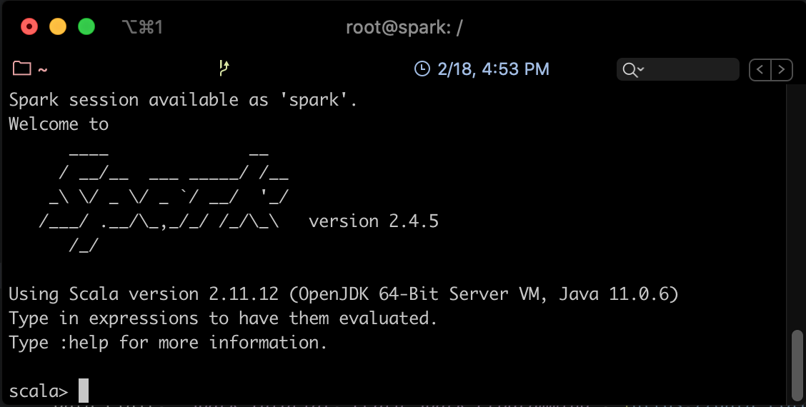

Partie 4 - Spark RDD et Traitement par Lots
 [^sparkforbeginners]
[^sparkforbeginners]RDD: Resilient Distributed Dataset
Spark gravite autour du concept de "Resilient Distributed Dataset" ou RDD, qui est une collection d'éléments tolérante aux fautes qui peut être gérée en parallèle. Les RDDs utilisent la mémoire et l'espace disque selon les besoins.
- R pour Résilient: capable de récupérer rapidement en cas de problèmes ou de conditions difficiles,
- D pour Distribué: partage les données sur les différents noeuds participants pour une exécution parallèle,
- D pour Dataset: une collection de données composée d'éléments séparés mais qui sont manipulés comme une unité compacte.
Il existe deux moyens de créer les RDDs [^spark-official]:
- Paralléliser une collection existante en mémoire dans le programme Driver.
- Le générer à partir d'un fichier enregistré sur un support de stockage externe.
Parallélisation de Collections
Les collections parallélisées sont créées en appelant la méthode parallelize du JavaSparkContext sur une collection existante dans votre programme Driver. Les éléments de la collection sont copiés pour former une structure distribuée qui peut être traitée en parallèle.
Par exemple, nous pouvons créer une collection parallélisée à partir d'une liste contenant les chiffres de 1 à 5:
List<Integer> data = Arrays.asList(1, 2, 3, 4, 5);
JavaRDD<Integer> distData = sc.parallelize(data);
Une fois créée, la structure distribuée distData peut être traitée en parallèle. Par exemple, il est possible d'appeler distData.reduce((a,b)-> a + b) pour faire la somme de tous les éléments de la liste.
Un paramètre important à définir dans une collection parallélisée, c'est le nombre de partitions à utiliser pour diviser la collection. Spark exécute une tâche pour chaque partition du cluster. En temps normal, Spark essaiera de définir le nombre de partitions automatiquement selon votre cluster, cependant, il est possible de le définir manuellement en le passant comme second paramètre de la fonction parallelize:
sc.parallelize(data, 10)
Génération à partir d'un fichier externe
Spark peut créer une collection distribuée à partir de n'importe quelle source de stockage supportée par Hadoop, incluant votre propre système de stockage, HDFS, Cassandra, HBase, Amazon S3, etc.
Il est possible de créer des RDDs à partir de fichiers texte en utilisant la méthode textfile du SparkContext. Cette méthode prend l'URI du fichier (chemin du fichier local, ou bien en utilisant hdfs:// ou s3://), et le lit comme une collection de lignes. Par exemple:
JavaRDD<String> distFile = sc.textFile("data.txt");
Opérations sur les RDDs
Les RDDs supportent deux types d'opérations:
- les transformations, qui permettent de créer une nouvelle collection à partir d'un RDD existant
- les actions, qui retournent une valeur au programme driver après avoir exécuté un calcul sur le RDD.
Par exemple, un map est une transformation qui passe chaque élément du dataset via une fonction, et retourne un nouvel RDD représentant les résultats. Un reduce est une action qui agrège tous les éléments du RDD en utilisant une certaine fonction et retourne le résultat final au programme.
 [^devopedia]
[^devopedia]Caractéristiques des RDDs
Immutabilité et Lignée
Les RDDs dans Spark sont des collection immuables, c'est à dire qu'elle ne sont jamais modifiées: toute transformation va créer un nouvel RDD au lieu de modifier le RDD initial. Quand un nouvel RDD a été créé à partir d'un RDD existant, ce nouvel RDD contient un pointeur vers le RDD parent. De même, toutes les dépendances entre les RDDs sont loggées dans un graphe, plutôt que directement sur les données. Ce graphe s'appelle Graphe de Lignée ou Lineage Graph.
Par exemple, si on considère les opérations suivantes:
- Créer un nouvel RDD à partir d'un fichier texte -> RDD1
- Appliquer des opérations de Map sur RDD1 -> RDD2
- Appliquer une opération de filtrage sur RDD2 -> RDD3
- Appliquer une opération de comptage sur RDD3 -> RDD4
Le graphe de lignée associé à ces opérations ressemble à ce qui suit:
Ce graphe peut être utile au cas où certaines partitions sont perdues. Spark peut rejouer la transformation sur cette partition en utilisant le graphe de lignée existant pour réaliser le même calcul, plutôt que de répliquer les données à partir de des différents noeuds du cluster.
Il est également utile en cas de réutilisation d'un graphe existant. Si par exemple on désire appliquer une opération tri sur RDD2, il est inutile de recharger le fichier une deuxième fois à partir du disque. Il suffit de modifier le graphe pour qu'il devienne comme suit:

Lazy Evaluation
Toutes les transformations dans Spark sont lazy (fainéantes), car elles ne calculent pas le résultat immédiatement. Elles se souviennent des transformations appliquées à un dataset de base (par ex. un fichier). Les transformations ne sont calculées que quand une action nécessite qu'un résultat soit retourné au programme principal. Cela permet à Spark de s'exécuter plus efficacement.
Exemple
L'exemple que nous allons présenter ici par étapes permet de relever les mots les plus fréquents dans un fichier. Pour cela, le code suivant est utilisé:
//Etape 1 - Créer un RDD à partir d'un fichier texte
val docs = spark.textFile("/docs")

//Etape 2 - Convertir les lignes en minuscule
val lower = docs.map(line => line.toLowerCase)

//Etape 3 - Séparer les lignes en mots
val words = lower.flatMap(line => line.split("\\s+"))

//Etape 4 - produire les tuples (mot, 1)
val counts = words.map(word => (word,1))

//Etape 5 - Compter tous les mots
val freq = counts.reduceByKey(_ + _)

//Etape 6 - Inverser les tuples (transformation avec swap)
freq.map(_.swap)

//Etape 7 - Inverser les tuples (action de sélection des n premiers)
val top = freq.map(_swap).top(N)

Test de Spark avec Spark-Shell
Nous allons tester le comportement de Spark et des RDD en utilisant l'exemple type pour l'analyse des données: le Wordcount, qui permet de compter le nombre de mots dans un fichier donné en entrée.
Commençons par lancer le cluster Spark installé dans la partie P3.
docker start spark-master spark-slave1 spark-slave2
Entrer dans le noeud Master comme suit:
docker exec -it spark-master bash
Dans le but de tester l'exécution de spark, commencer par créer un fichier input/file1.txt dans le répertoire /root:
mkdir /root/input
vim /root/input/file1.txt
Remplir le fichier avec le texte suivant, ou tout texte de votre choix (vous devez taper i pour passer en mode édition):
Hello Spark Wordcount!
Hello everybody else!
Lancer Spark Shell en utilisant la commande suivante:
spark-shell
Vous devriez avoir un résultat semblable au suivant: 
Vous pourrez tester spark avec un code scala simple comme suit (à exécuter ligne par ligne):
val lines = sc.textFile("/root/input/file1.txt")
val words = lines.flatMap(_.split("\\s+"))
val wc = words.map(w => (w, 1)).reduceByKey(_ + _)
wc.saveAsTextFile("/root/file1.count")
Ce code vient de (1) charger le fichier file1.txt du système de fichier courant, (2) séparer les mots selon les caractères d'espacement, (3) appliquer un map sur les mots obtenus qui produit le couple (<mot>, 1), puis un reduce qui permet de faire la somme des 1 des mots identiques.
Pour afficher le résultat, sortir de spark-shell en cliquant sur Ctrl-C. Afficher ensuite le contenu du fichier part-00000 du répertoire file1.count créé, comme suit:
cat /root/file1.count/part-00000
Le contenu des deux fichiers part-00000 et part-00001 ressemble à ce qui suit:
Spark Batch en Java
Préparation de l'environnement et Code
Nous allons dans cette partie créer un projet Spark Batch en Java (un simple WordCount), le charger sur le cluster et lancer le job.
- Sur votre propre machine, créer un projet Maven avec IntelliJ IDEA (ou tout IDE de votre choix), en utilisant la config suivante:
xml <groupId>spark.batch</groupId> <artifactId>wordcount</artifactId> <version>1</version>
- Rajouter dans le fichier pom les dépendances nécessaires, et indiquer la version du compilateur Java:
xml <properties> <maven.compiler.source>1.8</maven.compiler.source> <maven.compiler.target>1.8</maven.compiler.target> </properties> <dependencies> <!-- https://mvnrepository.com/artifact/org.apache.spark/spark-core --> <dependency> <groupId>org.apache.spark</groupId> <artifactId>spark-core_2.12</artifactId> <version>2.4.5</version> </dependency> </dependencies> - Sous le répertoire java, créer un package que vous appellerez tn.spark.batch, et dedans, une classe appelée WordCountTask.
- Écrire le code suivant dans WordCountTask:
```java package tn.spark.batch;
import org.apache.spark.SparkConf; import org.apache.spark.api.java.JavaPairRDD; import org.apache.spark.api.java.JavaRDD; import org.apache.spark.api.java.JavaSparkContext; import org.slf4j.Logger; import org.slf4j.LoggerFactory; import scala.Tuple2;
import java.util.Arrays;
import static jersey.repackaged.com.google.common.base.Preconditions.checkArgument; public class WordCountTask { private static final Logger LOGGER = LoggerFactory.getLogger(WordCountTask.class);
public static void main(String[] args) {
checkArgument(args.length > 1, "Please provide the path of input file and output dir as parameters.");
new WordCountTask().run(args[0], args[1]);
}
public void run(String inputFilePath, String outputDir) {
String master = "local[*]";
SparkConf conf = new SparkConf()
.setAppName(WordCountTask.class.getName())
.setMaster(master);
JavaSparkContext sc = new JavaSparkContext(conf);
JavaRDD<String> textFile = sc.textFile(inputFilePath);
JavaPairRDD<String, Integer> counts = textFile
.flatMap(s -> Arrays.asList(s.split(" ")).iterator())
.mapToPair(word -> new Tuple2<>(word, 1))
.reduceByKey((a, b) -> a + b);
counts.saveAsTextFile(outputDir);
}
} ```
La première chose à faire dans un programme Spark est de créer un objet JavaSparkContext, qui indique à Spark comment accéder à un cluster. Pour créer ce contexte, vous aurez besoin de construire un objet SparkConf qui contient toutes les informations sur l'application.
- appName est le nom de l'application
- master est une URL d'un cluster Spark, Mesos ou YARN, ou bien une chaîne spéciale local pour lancer le job en mode local.
!!! warning Nous avons indiqué ici que notre master est local pour les besoins du test, mais plus tard, en le packageant pour le cluster, nous allons enlever cette indication. Il est en effet déconseillé de la hard-coder dans le programme, il faudrait plutôt l'indiquer comme option de commande à chaque fois que nous lançons le job.
Le reste du code de l'application est la version en Java de l'exemple en scala que nous avions fait avec spark-shell.
Test du code en local
Pour tester le code sur votre machine, procéder aux étapes suivantes:
- Créer un fichier texte de votre choix (par exemple le fameux loremipsum.txt, que vous pourrez générer ici) dans le répertoire src/main/resources.
- Créer une nouvelle configuration de type "Application" (Run->Edit Configurations):


- La nommer WordCountTask, et définir les arguments suivants (fichier de départ et répertoire d'arrivée) comme Program arguments:
src/main/resources/loremipsum.txt src/main/resources/out
- Cliquer sur OK, et lancer la configuration. Si tout se passe bien, un répertoire out sera créé sous resources, qui contient deux fichiers: part-00000, part-00001.

Lancement du code sur le cluster
Pour exécuter le code sur le cluster, modifier comme indiqué les lignes en jaune dans ce qui suit:
public class WordCountTask {
private static final Logger LOGGER = LoggerFactory.getLogger(WordCountTask.class);
public static void main(String[] args) {
checkArgument(args.length > 1, "Please provide the path of input file and output dir as parameters.");
new WordCountTask().run(args[0], args[1]);
}
public void run(String inputFilePath, String outputDir) {
SparkConf conf = new SparkConf()
.setAppName(WordCountTask.class.getName());
JavaSparkContext sc = new JavaSparkContext(conf);
JavaRDD<String> textFile = sc.textFile(inputFilePath);
JavaPairRDD<String, Integer> counts = textFile
.flatMap(s -> Arrays.asList(s.split(" ")).iterator())
.mapToPair(word -> new Tuple2<>(word, 1))
.reduceByKey((a, b) -> a + b);
counts.saveAsTextFile(outputDir);
}
}
Lancer ensuite une configuration de type Maven, avec les commandes package install.

Un fichier intitulé worcount-1.jar sera créé sous le répertoire target.
Nous allons maintenant copier ce fichier dans docker. Pour cela, naviguer vers le répertoire du projet avec votre terminal (ou plus simplement utiliser le terminal dans IntelliJ), et taper la commande suivante:
docker cp target/wordcount-1.jar spark-master:/root/wordcount-1.jar
Copier également le fichier loremipsum.txt que vous avez créé dans votre projet:
docker cp src/main/resources/loremipsum.txt spark-master:/root/input/loremipsum.txt
Aller à votre contenaire spark-master (en utilisant la commande docker exec ...), et lancer un job Spark en utilisant ce fichier jar généré, avec la commande spark-submit, un script utilisé pour lancer des applications spark sur un cluster.
cd /root
spark-submit --class tn.spark.batch.WordCountTask --master local wordcount-1.jar input/loremipsum.txt output
- Nous avons lancé le job en mode local, pour commencer.
- Le fichier en entrée est le fichier loremipsum.txt, et le résultat sera stocké dans un répertoire output.
Si tout se passe bien, vous devriez trouver, dans le répertoire output, un fichier part-00000, qui ressemble à ce qui suit:

Références
[^sparkforbeginners]: Spark for beginners, RDD in Spark, http://sparkforbeginners.blogspot.com/2016/05/rdd-in-spark.html, consulté le 03/2020
[^spark-official]: Spark Documentation, Resilient Distributed Datasets(RDDs), https://spark.apache.org/docs/latest/rdd-programming-guide.html#resilient-distributed-datasets-rdds, consulté le 03/2020
[^devopedia]: Devopedia, Apache Spark, https://devopedia.org/apache-spark, consulté le 03/2020